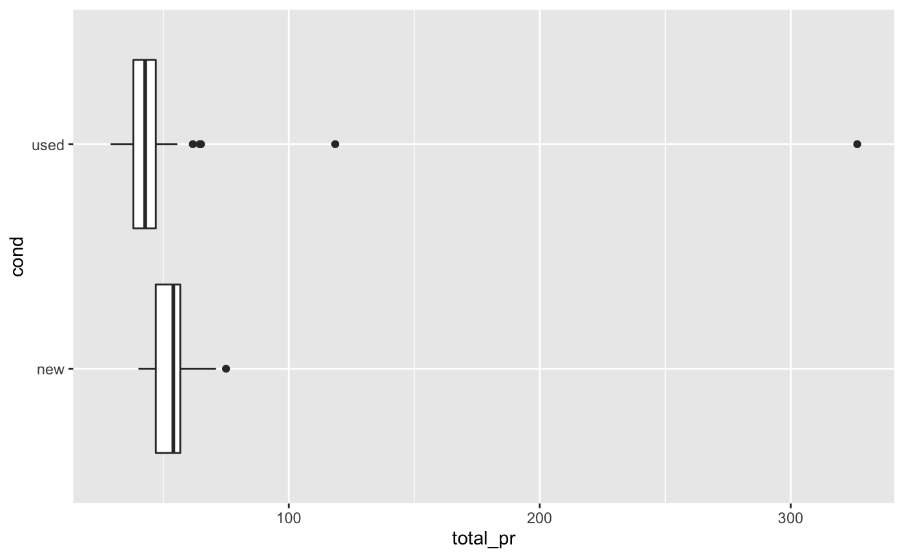
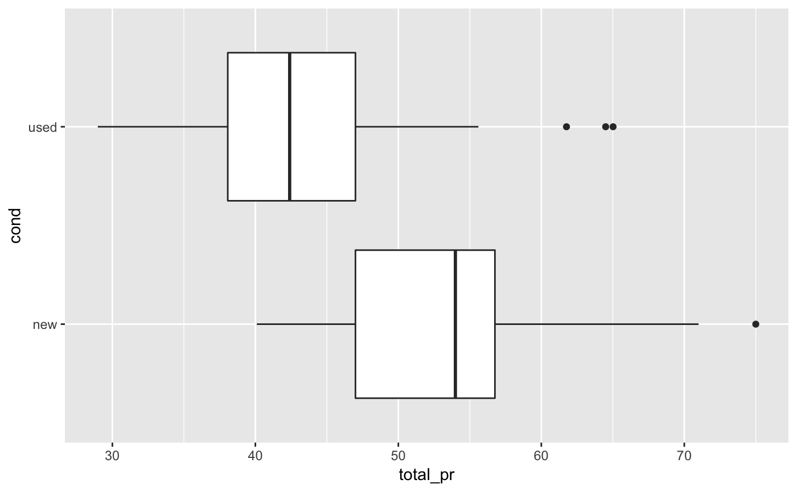
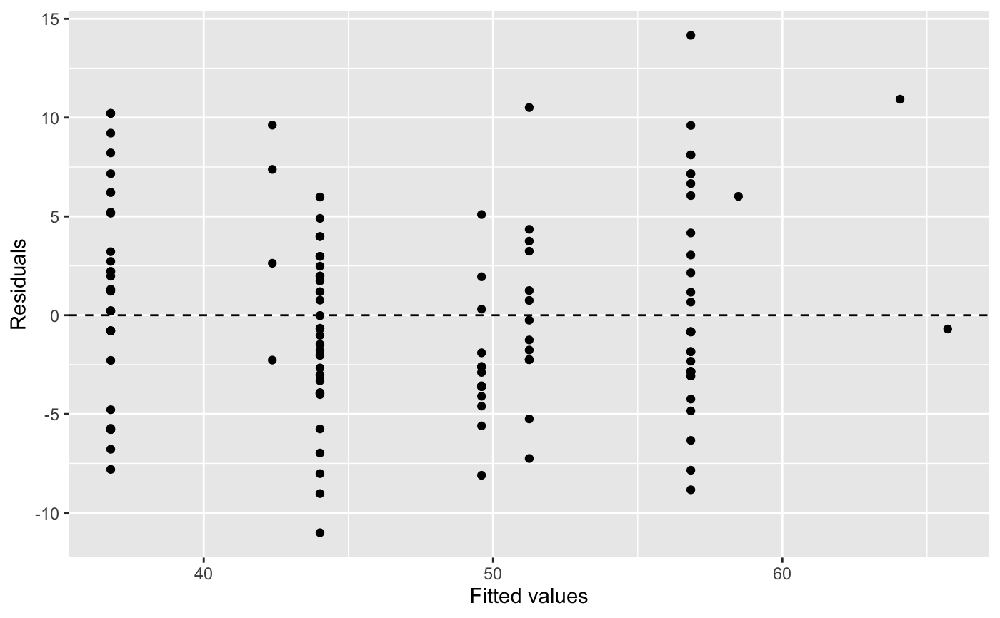
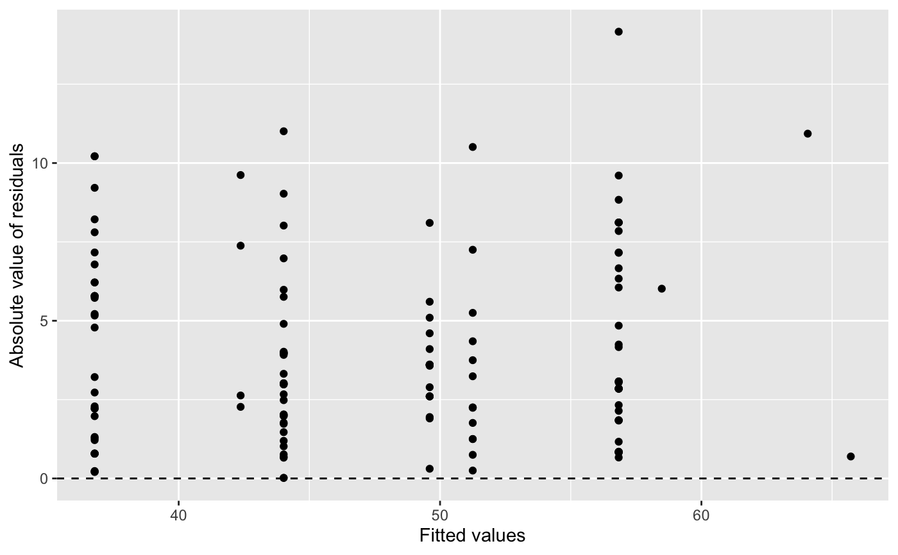
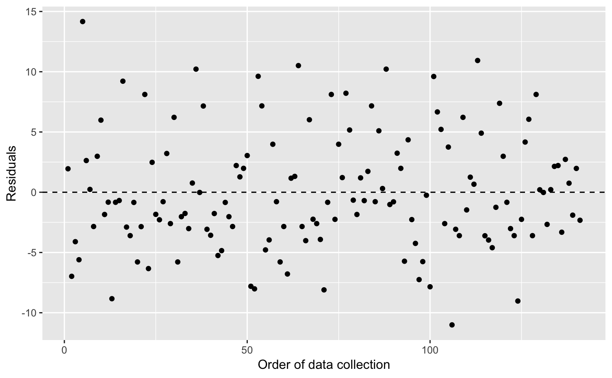
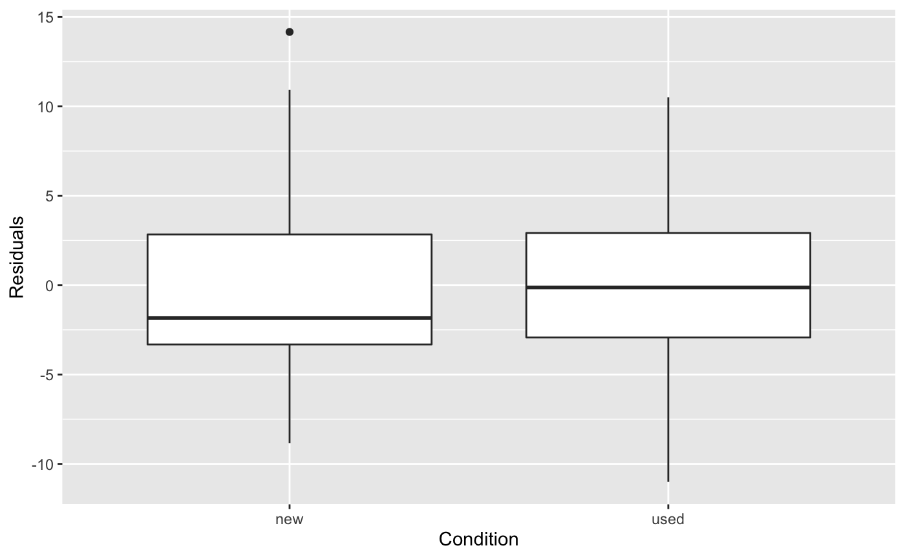
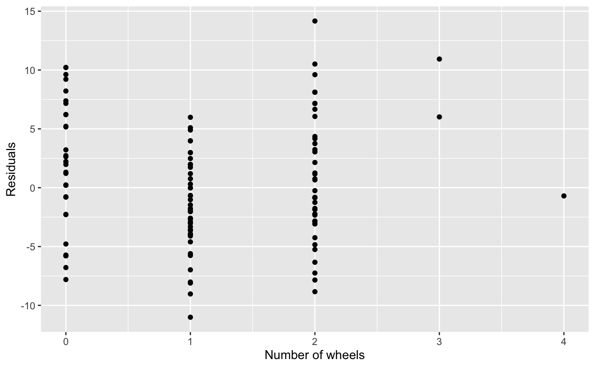

Auction data from Ebay for the game Mario Kart for the Nintendo Wii. This data was collected in early October 2009.
mariokart
A data frame with 143 observations on the following 12 variables. All prices are in US dollars.
Auction ID assigned by Ebay.
Auction length, in days.
Number of bids.
Game condition, either new or used.
Start price of the auction.
Shipping price.
Total price, which equals the auction price plus the shipping price.
Shipping speed or method.
The seller's rating on Ebay. This is the number of positive ratings minus the number of negative ratings for the seller.
Whether the auction feature photo was a stock photo or not. If the picture was used in many auctions, then it was called a stock photo.
Number of Wii wheels included in the auction. These are steering wheel attachments to make it seem as though you are actually driving in the game. When used with the controller, turning the wheel actually causes the character on screen to turn.
The title of the auctions.
Ebay.
There are several interesting features in the data. First off, note that there are two outliers in the data. These serve as a nice example of what one should do when encountering an outlier: examine the data point and remove it only if there is a good reason. In these two cases, we can see from the auction titles that they included other items in their auctions besides the game, which justifies removing them from the data set.
This data set includes all auctions for a full week in October 2009. Auctions were included in the data set if they satisfied a number of conditions. (1) They were included in a search for "wii mario kart" on ebay.com, (2) items were in the Video Games > Games > Nintendo Wii section of Ebay, (3) the listing was an auction and not exclusively a "Buy it Now" listing (sellers sometimes offer an optional higher price for a buyer to end bidding and win the auction immediately, which is an optional Buy it Now auction), (4) the item listed was the actual game, (5) the item was being sold from the US, (6) the item had at least one bidder, (7) there were no other items included in the auction with the exception of racing wheels, either generic or brand-name being acceptable, and (8) the auction did not end with a Buy It Now option.
library(ggplot2) library(broom) library(dplyr) # Identify outliers ggplot(mariokart, aes(x = total_pr, y = cond)) + geom_boxplot()# Replot without the outliers mariokart %>% filter(total_pr < 80) %>% ggplot(aes(x = total_pr, y = cond)) + geom_boxplot()# Fit a multiple regression models mariokart_no <- mariokart %>% filter(total_pr < 80) m1 <- lm(total_pr ~ cond + stock_photo + duration + wheels, data = mariokart_no) tidy(m1)#> # A tibble: 5 x 5 #> term estimate std.error statistic p.value #> <chr> <dbl> <dbl> <dbl> <dbl> #> 1 (Intercept) 41.3 1.71 24.2 4.87e-51 #> 2 condused -5.13 1.05 -4.88 2.91e- 6 #> 3 stock_photoyes 1.08 1.06 1.02 3.08e- 1 #> 4 duration -0.0268 0.190 -0.141 8.88e- 1 #> 5 wheels 7.29 0.555 13.1 5.89e-26#> # A tibble: 4 x 5 #> term estimate std.error statistic p.value #> <chr> <dbl> <dbl> <dbl> <dbl> #> 1 (Intercept) 41.2 1.49 27.6 6.64e-58 #> 2 condused -5.18 0.996 -5.20 7.21e- 7 #> 3 stock_photoyes 1.12 1.02 1.10 2.75e- 1 #> 4 wheels 7.30 0.545 13.4 1.11e-26#> # A tibble: 3 x 5 #> term estimate std.error statistic p.value #> <chr> <dbl> <dbl> <dbl> <dbl> #> 1 (Intercept) 42.4 1.07 39.8 1.75e-77 #> 2 condused -5.58 0.925 -6.04 1.35e- 8 #> 3 wheels 7.23 0.542 13.3 1.29e-26# Fit diagnostics aug_m3 <- augment(m3) ggplot(aug_m3, aes(x = .fitted, y = .resid)) + geom_point() + geom_hline(yintercept = 0, linetype = "dashed") + labs(x = "Fitted values", y = "Residuals")ggplot(aug_m3, aes(x = .fitted, y = abs(.resid))) + geom_point() + geom_hline(yintercept = 0, linetype = "dashed") + labs(x = "Fitted values", y = "Absolute value of residuals")ggplot(aug_m3, aes(x = 1:nrow(aug_m3), y = .resid)) + geom_point() + geom_hline(yintercept = 0, linetype = "dashed") + labs(x = "Order of data collection", y = "Residuals")ggplot(aug_m3, aes(x = wheels, y = .resid)) + geom_point() + labs(x = "Number of wheels", y = "Residuals", title = "Notice curvature")